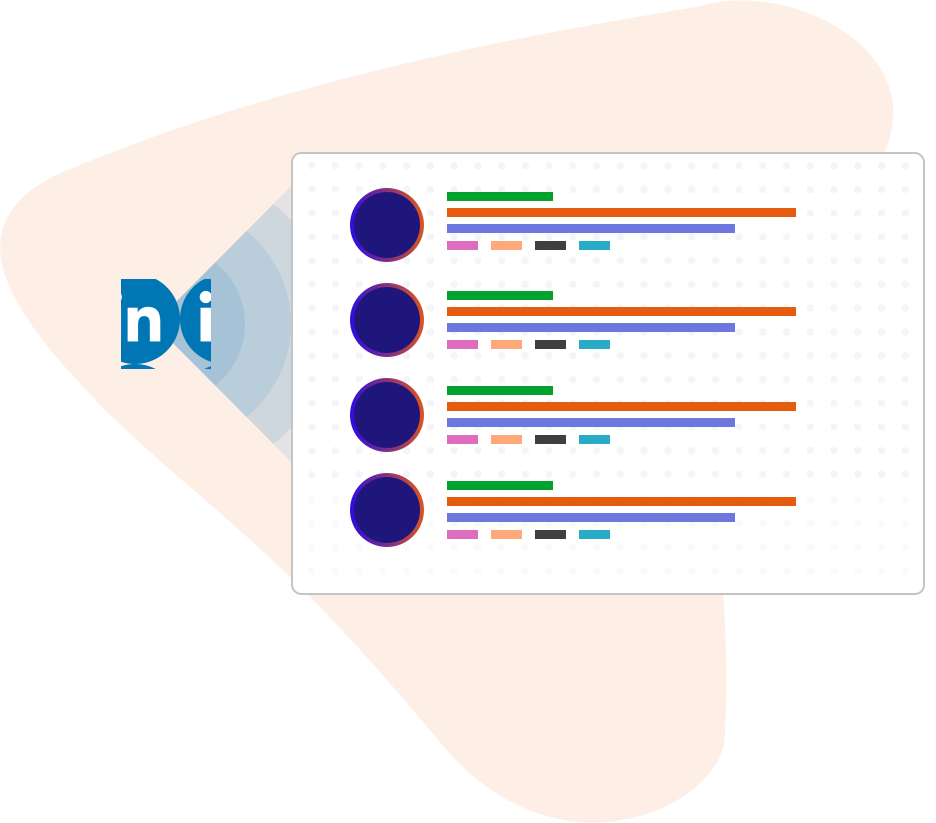

How It Works


Intro Seeker: Jane
Jane knows her target profile very well but does not know her investor’s network at all.Intro Seeker: Investor Jon
Jon has no idea what Jane’s target profile is. He ends up only making a handful of mediocre intros from the top of his mind.